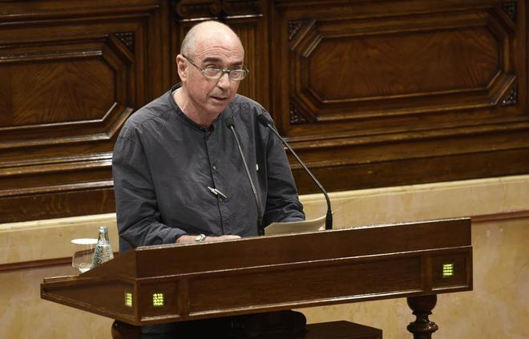

La Generalitat abre la puerta a sancionar a funcionarios que no cumplan con la 'desconexión'
 "En el momento que tengamos la ley de transitoriedad jurídica, ello obligará a todos los funcionarios que trabajan y viven en Cataluña. El que no la cumpla será sancionado. Se lo tendrán que pensar muy bien. No digo que sea fácil, al revés, muchos de ellos sufrirán. Porque dentro de los Mossos d'Esquadra hay sectores que son muy contrarios", dijo Llach en una charla organizada por Òmnium Cultural el pasado marzo, según ha revelado hoy El País.